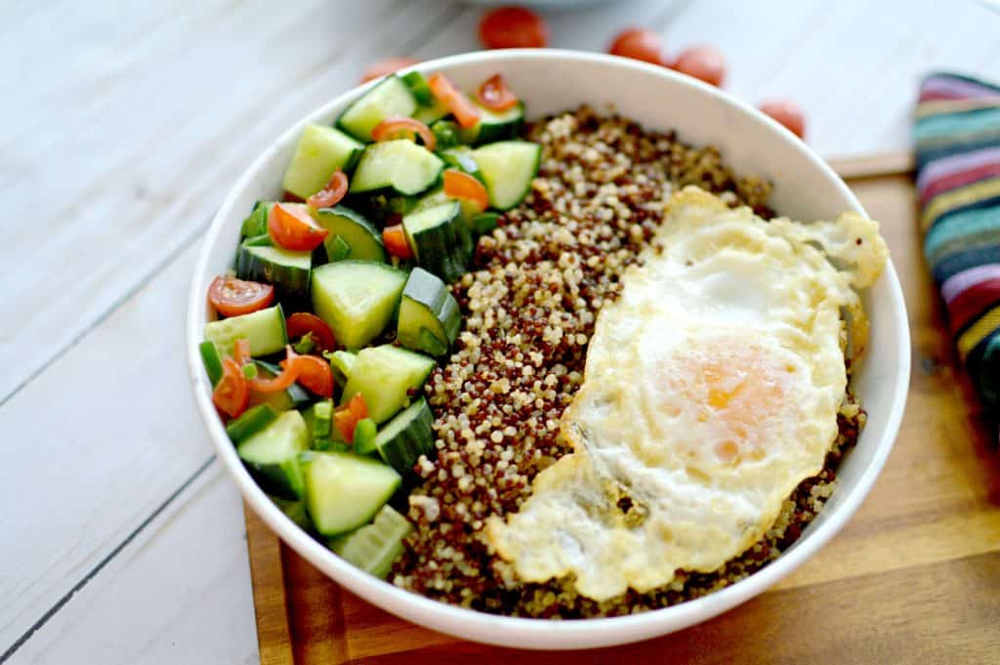
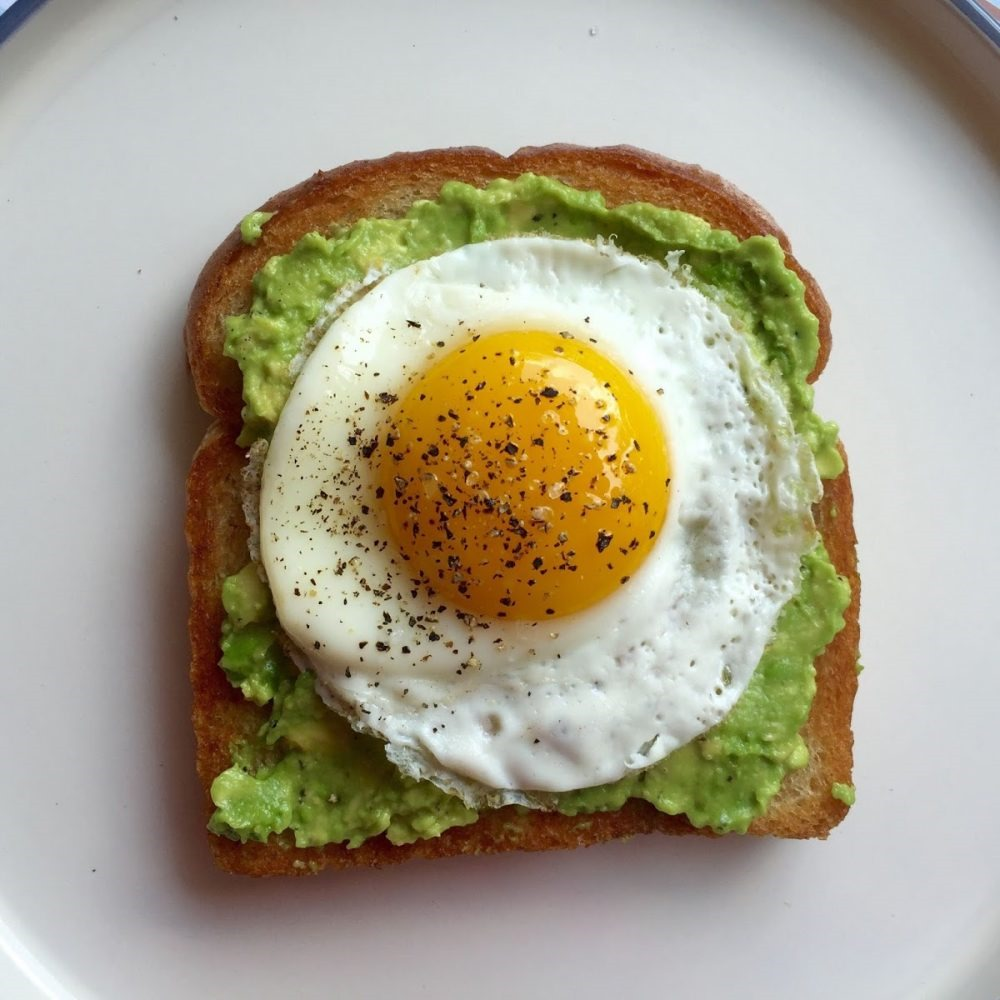
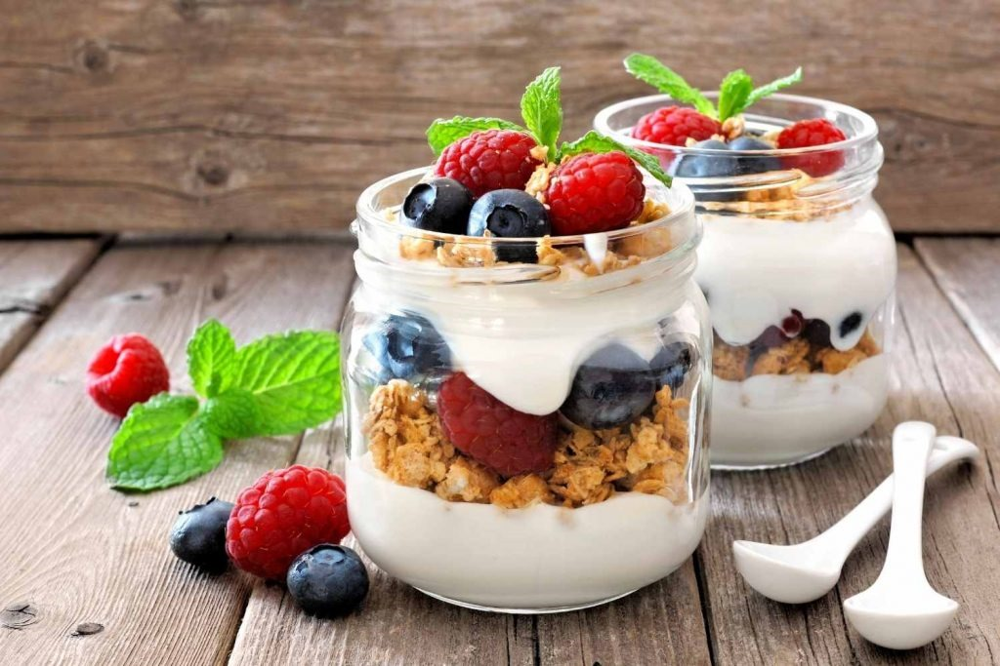
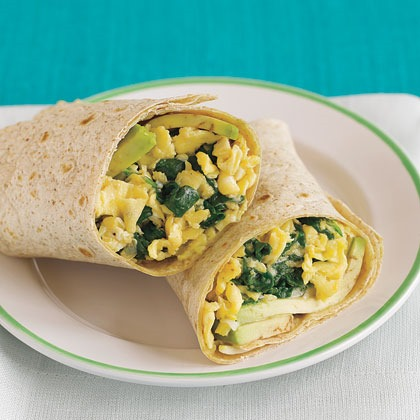

Quinoa Breakfast Bowl
Approx. 300 calories per serving
Health Benefits: Quinoa is a complete protein, rich in fiber, and contains various vitamins and minerals. It's also gluten-free and can help in weight management.
Ingredients:
- 1/2 cup quinoa
- 1 cup almond milk (or any preferred milk)
- 1 tablespoon honey or maple syrup
- Fresh fruits (e.g., berries, sliced banana)
- Nuts and seeds (e.g., almonds, chia seeds)
Process:
- Rinse quinoa under cold water.
- In a saucepan, combine quinoa and almond milk. Bring to a boil, then reduce heat and simmer for about 15 minutes or until quinoa is cooked and fluffy.
- Remove from heat and stir in honey or maple syrup.
- Serve quinoa in bowls, topped with fresh fruits, nuts, and seeds.

Avocado Toast
Approx. 250 calories per serving
Health Benefits: Avocados are rich in healthy fats, fiber, potassium, and vitamins. They can help improve heart health and promote satiety.
Ingredients:
- 2 slices whole grain bread
- 1 ripe avocado
- Cherry tomatoes, sliced
- Red pepper flakes (optional)
- Salt and pepper to taste
Process:
- Toast the bread slices until golden brown.
- Mash the ripe avocado in a bowl and season with salt and pepper.
- Spread the mashed avocado evenly on the toast.
- Top with sliced cherry tomatoes and red pepper flakes if desired.

Greek Yogurt Parfait
Approx. 200 calories per serving
Health Benefits: Greek yogurt is high in protein, calcium, and probiotics, which promote gut health. It's also a good source of vitamins and minerals.
Ingredients:
- 1 cup Greek yogurt
- 1/4 cup granola
- Mixed berries (e.g., strawberries, blueberries)
- Honey or maple syrup (optional)
Process:
- In a glass or bowl, layer Greek yogurt, granola, and mixed berries.
- Repeat the layers until the glass or bowl is filled.
- Drizzle with honey or maple syrup if desired.

Egg and Spinach Breakfast Wrap
Approx. 300 calories per serving
Health Benefits: Eggs are a good source of protein, vitamins, and minerals. Spinach is rich in iron, calcium, and antioxidants.
Ingredients:
- 2 large eggs
- Handful of fresh spinach leaves
- Whole wheat tortilla
- 1/4 cup diced tomatoes
- 1/4 cup shredded cheese (optional)
- Salt and pepper to taste
Process:
- In a skillet, scramble the eggs until cooked through.
- Add fresh spinach leaves to the skillet and cook until wilted.
- Warm the whole wheat tortilla in the skillet or microwave.
- Place the scrambled eggs and spinach on the tortilla.
- Add diced tomatoes and shredded cheese if desired.
- Roll up the tortilla to form a wrap and serve.